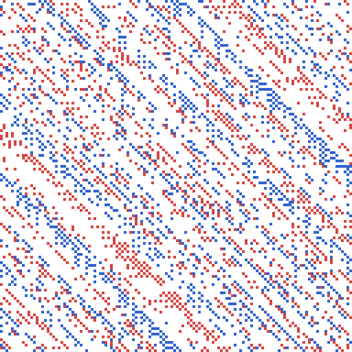
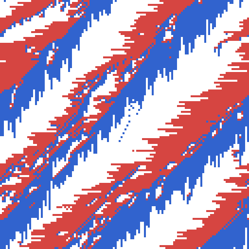

シミュレーション例と考察
本章では、密度 \(p\) を変えながらシミュレーションを実行し、 BML 交通モデルの理論 で説明した自由流と渋滞の違いを具体的な数値で確認します。
評価指標
各ステップにおいて、直前のステップから実際に位置が変化した車の割合を「移動率」として計測します。移動率が 1 に近いほど、多くの車が滞りなく動けている自由流に近い状態であり、移動率が 0 に近いほど、車同士が互いの進路を塞ぎ合って動けなくなった渋滞状態に近いことを示します。盤面サイズを 128 × 128 、乱数のシードを固定した上で、密度ごとにシミュレーションを実行しました。
密度による定常状態の違い
十分にステップを進めた後（ 300 ステップ後）の移動率を、密度ごとに測定した結果を次の表に示します。
密度 \(p\) |
移動率 |
|---|---|
0.10 |
0.9970 |
0.20 |
0.9922 |
0.30 |
0.9568 |
0.35 |
0.7896 |
0.40 |
0.4986 |
0.60 |
0.0004 |
密度が 0.1 から 0.3 程度までの範囲では移動率が 1 に近い値を保ち続け、自由流状態が維持されています。一方、密度が 0.35 を超えたあたりから移動率が急激に低下し始め、密度 0.6 では移動率がほぼ 0 まで落ち込んでおり、渋滞状態（デッドロック）に至っていることが分かります。この結果は、 BML 交通モデルの理論 で述べた「臨界密度は 0.3 台前半程度」という説明とおおむね整合しています。
時間発展の例
密度による違いをより詳しく見るため、密度 0.2 （自由流になる例）と密度 0.6 （渋滞になる例）について、シミュレーション開始からの移動率の推移を測定した結果を次の表に示します。
ステップ数 |
移動率（密度 0.2 ） |
移動率（密度 0.6 ） |
|---|---|---|
0 |
0.8045 |
0.3917 |
20 |
0.9356 |
0.1952 |
40 |
0.9523 |
0.1339 |
80 |
0.9731 |
0.0939 |
120 |
0.9752 |
0.0724 |
200 |
0.9852 |
0.0441 |
密度 0.2 の場合、開始直後は初期配置に起因する多少の詰まりが見られるものの、ステップが進むにつれて移動率が上昇し、比較的短時間で高い移動率に落ち着いています。これは、初期状態でたまたま生じた局所的な渋滞が解消され、自由流状態へ移行していく様子を表しています。対照的に、密度 0.6 の場合は開始直後から移動率が低く、ステップが進むにつれてさらに低下を続けており、渋滞が徐々に格子全体へ広がっていく様子が読み取れます。
格子の状態の可視化
密度 0.2 （自由流）と密度 0.6 （渋滞）について、 300 ステップ後の格子の状態を画像として出力した結果を次の表に示します。いずれも盤面サイズ 128 × 128 、乱数のシードを固定しており、 BML 交通モデルの理論 の表と同じ配色（白：空きセル、青：南北方向の車、赤：東西方向の車）を用いています。
密度 0.2 （自由流） |
密度 0.6 （渋滞） |
|---|---|
 |
 |


密度 0.2 の画像では、車がほぼ規則的な斜めの筋を作りながら途切れることなく流れており、自由流状態になっていることが見て取れます。密度 0.6 の画像では、車が斜め方向に伸びる太い帯状の塊を作って固まっており、渋滞状態（デッドロック）に至っていることが視覚的にも確認できます。
これらの画像は、 BMLImage クラスを利用して格子の状態を画像として出力するスクリプト export_images.py で生成しました。
GUI での観察
実行方法 の手順に従って GUI アプリケーションを起動し、密度スケールで probability の値を小さく設定して「 start 」ボタンを押すと、車が途切れることなく流れ続ける自由流状態を視覚的に確認できます。逆に、既定値に近い高い密度で開始すると、次第に車の塊が固まって動かなくなり、格子全体が渋滞する様子を観察できます。数値だけでなく、実際に画面上で 2 つの状態の違いを見比べることで、 BML モデルが示す相転移現象をより直感的に理解できます。